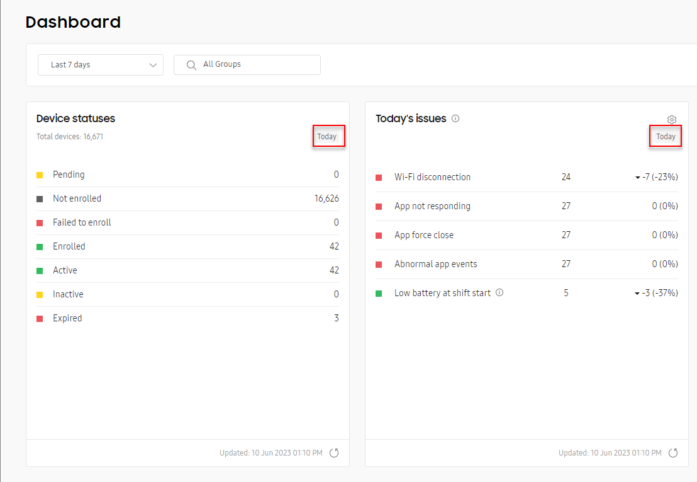
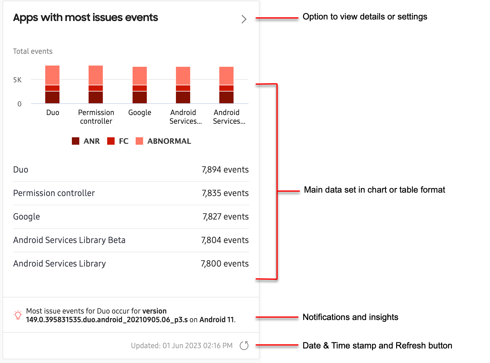

Overview
Last updated September 6th, 2023
The Knox Asset Intelligence Dashboard is the hub for all of your fleet’s business data insights. Here is where you’ll find at-a-glance views of your device fleet’s health and performance, organized into easy-to-use tiles.
Launch the Dashboard
To launch the Dashboard, click Dashboard from the left navigation pane. In order for data to appear on the Dashboard, you must first have devices added to your console. If you are launching the Dashboard for the first time, you will see two buttons on the page prompting you to either register a reseller or upload devices:
- Click REGISTER RESELLER if you want resellers to add devices directly to your console. See Register resellers to learn more.
- Click UPLOAD DEVICES if you want to manually add devices to your console through a CSV file. See Manage devices to learn more.
After your devices are added and enrolled, you’ll see several dashboard tiles, each providing a unique data set related to a specific business insight. The main Dashboard displays all of your insights, together in the same view. If you only want to see network, apps, or battery related data, you can click the respective sub-dashboard links in the left navigation pane to view just those insights.
The following is a list of all dashboard tiles available in Knox Asset Intelligence:
| Insight Category | Tile name | Purpose |
|---|---|---|
| General | Device status | Monitor the deployment of Knox Asset Intelligence on your devices. |
| Today's issues | View and manage daily Wi-Fi, battery, and app-related issues. You can easily see high-risk and mid-risk issues, which are defined by configurable thresholds. | |
| Device debug log | Monitor the progress of your device debug log requests and download tcpdump logs collected from your device users. | |
| Knox Service Plugin | Check the deployment status of your Knox Service Plugin (KSP) policies. | |
| Network | Wi-Fi disconnection events: Groups | Get in-depth visibility into device groups with the highest amount of disconnection problems, including detailed event logs. |
| Wi-Fi disconnection events: BSSIDs and APs | Get in-depth visibility into Wi-Fi networks with the highest amount of disconnection problems, including detailed event logs. | |
| Mobile network usage | Get in-depth visibility into cellular usability information, including which network generations are used per carrier. | |
| Network latency | Lets you see which IP addresses or domains have the longest response time or don't respond at all to device requests. | |
| App | Apps with most issue events | Identify which apps face the highest number of app not responding, force close, and abnormal events. Use the detailed event logs to help stabilize enterprise app performance. |
| Groups with app issue events | Identify which groups contain devices reporting the highest number of app not responding, force close, and abnormal events. | |
| Apps with highest battery consumption | See which apps consume the most battery life in enterprise operations. | |
| Apps with highest network usage | See which apps use the most Wi-Fi and mobile network data in enterprise operations. | |
| Total app usage | Identify which apps are used most often in enterprise operations. Note that this data is only collected when the battery is in use (no data is collected if the battery is in a charging state). | |
| Foreground app usage | Identify which apps are used most often in the foreground on your devices. Note that this data is only collected when the battery is in use (no data is collected if the battery is in a charging state). | |
| Background app usage | Identify which apps are used most often in the background on your devices. Note that this data is only collected when the battery is in use (no data is collected if the battery is in a charging state). | |
| App type | Understand how managed apps are used in comparison to unmanaged apps. A list of managed apps can be defined in the dashboard settings MANAGED APPS tab. | |
| Battery | Battery status | Get an overview of your devices' battery statuses, including their battery levels and charging statuses. |
| Battery state of health | Understand the overall health of your devices' batteries. Consider servicing or replacing devices with the Bad status. | |
| Battery drain events | Identify which devices encounter one or more battery drain events, which trigger when battery consumption exceeds a certain percentage within an hour. You can define this percentage in the dashboard settings. | |
| Low battery events | Identify which devices encounter one or more low battery events, which trigger when the battery level falls below a certain percentage. You can define this percentage in the dashboard settings. | |
| Charge events | See how many times devices are charged during the set time period. Ideally, a device that's fully charged when work starts doesn't need to be recharged before work ends. | |
| Battery level at shift start | Get insights into how much charge device batteries have at the start of a work shift. | |
| Battery level at shift end | Get insights into how much charge is left on device batteries at the end of a work shift. | |
| Groups with low battery events | See which groups have the highest number of devices that reported low battery events. | |
| Groups with low battery devices at shift start | See which groups have the highest number of devices that reported low battery events at the start of a shift. | |
| Scanning | Scanning performance | See scanning insights from your devices enrolled in Knox Capture, including total scan counts and average scans per device. Your devices must be enrolled in both Knox Capture and Knox Asset Intelligence to see these insights. |
| System | Storage usage status | Lets you see how many devices are close to reaching their maximum storage capacity, letting you proactively plan for data backups or offloading of unnecessary data. |
Data refresh rates
While the Knox Asset Intelligence agent runs on a device, it continually collects device usage data and sends this information to the servers in order to be turned into actionable business insights on your Dashboard.
Depending on the insight, there can be a delay between when data gets collected on the device, and when it actually shows up on your dashboard. Some dashboard tiles are denoted with a Today indicator, indicating that data is only available for the current day, regardless of the reporting period selected.

Near the top of each dashboard, you can select the date and time range for which you want to see data. The date and time range selection is global, which means it affects all other tiles — except those denoted as Today — across all dashboards in the console.
The following table details the update rate for each data insight on the dashboard:
Real-time means that data is sent to the server at the time the event occurred, and you can see it on the Dashboard immediately. Previous day means that data is sent to the server on the day the event occurred, but you cannot see data on the Dashboard until the day after.
| Data type | Data insight | Dashboard update rate | Available date ranges |
|---|---|---|---|
| Common | Device status | Real-time | Can only view data for Today |
| Battery | Battery status and state of health | Real-time | Can only view data for Today |
| Low battery, Battery drain, and Charge events | Previous day | Can view data for Yesterday, or Last 7, 14, 30, or 60 days. | |
| Battery level at shift start | Real-time when viewing Today's issues, otherwise Previous day. | Can view data for Yesterday, or Last 7, 14, 30, or 60 days. | |
| Battery level at shift end | Previous day | Can view data for Yesterday, or Last 7, 14, 30, or 60 days. | |
| App | App usage | Previous day | Can view data for Yesterday, or Last 7, 14, 30, or 60 days. |
| App issues | Real-time sent hourly by default. Can be changed in Dashboard Settings. | Can view data for Today, Yesterday, or Last 7, 14, 30, or 60 days. | |
| Network | Wi-Fi disconnections | Real-time | Can view data for Today, Yesterday, Last 7, or 14 days. |
| Mobile network usage | Previous day | Can view data for Yesterday, or Last 7, 14, 30, or 60 days. | |
| Network latency response time | Previous day | Can view data for Last 7, 14, or 30, days. | |
| System | Storage usage status | Real-time every every 3 hours. | Can only view data for Today. |
| Scan | Scanning performance | Real-time when viewing data for Today, otherwise Previous day. | Can view data for Today, Yesterday, or Last 7, 14, 30, or 60 days. |
| KSP | Knox Service Plugin | Real-time | Can only view data for Today. |
| Location | Location status | Real-time | Can only view data for Today. |
| Security | Warranty bit | Real-time | Can only view data for Today. |
Dashboard tiles explained
Whether you’re viewing the main Knox Asset Intelligence Dashboard, or one of the sub-dashboards for Network, App, or Battery insights, each tile generally consist of the following components:
- The main data set displaying a table or chart of the insight’s top issues or events.
- An option to view expanded data insights or settings.
- A notification section that lets you know when data thresholds are reached, as well as other important information related to your insight. See Dashboard settings: Thresholds for more information.
- A date and time stamp for the last update, and a manual refresh button to request new data. See Data refresh rates to learn more.

Some dashboard tiles — like Device statuses and App type — do not provide expanded or drill-down views of the data.
Main tile view
Most dashboard tiles display their key data insights in the form of charts, tables, or lists. Some tiles like the Apps with most issues provide both a chart and a list to provide greater detail into the insight.
Just below the main data set, you might see alerts, notifications, or other important information related to your insight. Some dashboard insights display notifications when critical event thresholds are reached (for example, when apps use more than 100MB of mobile data per day), while others display the top issue, app, or group contributing to the insight (for example, which is the most used app across your entire fleet).
Near the bottom-right corner of each tile, you’ll see the last date and time data got refreshed. Some tiles like Today’s issues allow you to refresh data on demand. If a tile has a Refresh icon next to the timestamp, you can click the icon to request the latest data from the server.
Expanded view
To help you analyze critical issues in greater detail, most Dashboard tiles provide an expanded view of the data set. To see an insight’s expanded view, click the > button near to top-right corner of the tile.

Depending on the insight, some expanded views include a chart of the most critical issues near the top of the page, and a table detailing all issues near the bottom. Others might just display information in a table (without a chart).
For example, the expanded view for Apps with highest battery consumption shows the top 5 worst performing apps, and their consumed battery power percentage over the selected reporting period. While the chart only displays the top 5 worst apps, the table below displays every app that has consumed excessive battery over the same reporting period.
Most insights allow you to filter the data set and download a CSV file of the data from the expanded view. If the option is available, click the Filter icon to open the filter panel and select specific parameters, then click Apply to save your changes. The page updates and shows only the filtered results, and filter tags appear above the data. To remove the filters and restore the default settings, click CLEAR ALL FILTERS.
If available, you can click the CUSTOMIZE TABLE button ( … ) to show or hide columns in your table. Note that some columns are mandatory and cannot be hidden, and some insights only allow you to display up to 7 columns at a time. And if the CSV option is available, you can click DOWNLOAD AS CSV to export the table in CSV format. The columns in the CSV file will match the columns in the table.
Drill-down view
For some insights, you can get an even deeper analysis of the data by clicking certain key-values in the expanded-view table. This will open a drill-down view for those values, providing additional details not found in the insight’s expanded view.

For example, in the expanded view table for Apps with highest battery consumption, the key-values are the applications in the APP column. Clicking any link in the APP column takes you to a drill-down view for that application, letting you see extended details like which versions of the app consume the most battery power, and how many devices are running each version.
Like with the expanded view, you can also use the filter (if available) to focus on specific data, customize your table, or download the table as a CSV file for offline viewing.
On this page
Is this page helpful?